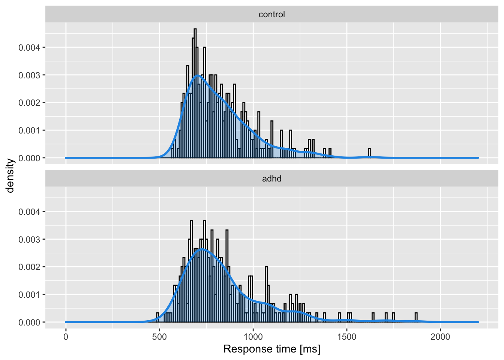
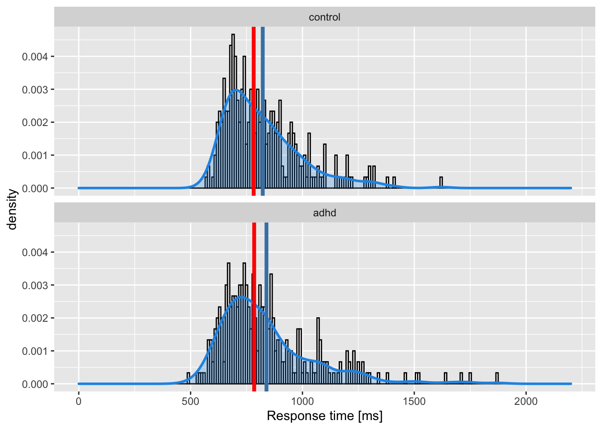
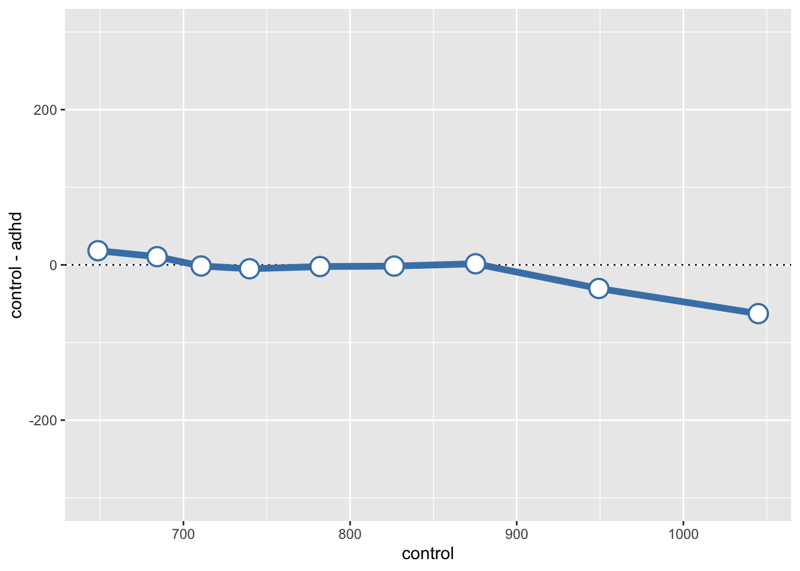

Reaktionszeiten: I
Anwendungen.
![]()
ADHD
d <- read_csv("data/session-7.csv")glimpse(d)Rows: 300
Columns: 2
$ control <dbl> 700.2404, 1034.3323, 675.8451, 1027.1913, 781.4268, 637.8018, …
$ adhd <dbl> 1457.7710, 736.0453, 1230.0827, 995.3828, 763.0127, 737.8560, …d <- d |>
pivot_longer(everything(),
names_to = "group", values_to = "rt") |>
mutate(group = as_factor(group)) |>
arrange(group)glimpse(d)Rows: 600
Columns: 2
$ group <fct> control, control, control, control, control, control, control, c…
$ rt <dbl> 700.2404, 1034.3323, 675.8451, 1027.1913, 781.4268, 637.8018, 83…p1 <- d |>
ggplot(aes(rt)) +
geom_histogram(aes(y = ..density..),
colour = "black", fill = "white",
binwidth = 10) +
geom_density(lwd = 1, colour = 4,
fill = 4, alpha = 0.25) +
facet_wrap(~group, ncol = 1) +
xlab("Response time [ms]") +
xlim(c(0, 2200))p1
Zusammenfassen: zentrale Tendenz und Dispersion
Mittelwert und Standardabweichung
Median und Interquartilsbereich
Der Interquartilsbereich repräntiert den Unterschied zwischen dem ersten (25. Perzentil) und dritten (75. Perzentil) Quartil. In diesem Bereich befinden sich 50% der Datenpunkte.
d %>%
group_by(group) %>%
summarise(mean = median(rt),
q25 = quantile(rt, probs = 0.25),
q75 = quantile(rt, probs = 0.75)) |>
mutate(IQR = q75 - q25)# A tibble: 2 × 5
group mean q25 q75 IQR
<fct> <dbl> <dbl> <dbl> <dbl>
1 control 782. 694. 898. 205.
2 adhd 784. 694. 923. 228.# A tibble: 2 × 3
group mean IQR
<fct> <dbl> <dbl>
1 control 782. 205.
2 adhd 784. 228.by_group# A tibble: 2 × 5
group mean median sd IQR
<fct> <dbl> <dbl> <dbl> <dbl>
1 control 822. 782. 171. 205.
2 adhd 839. 784. 214. 228.p1 +
geom_vline(aes(xintercept = mean),
data = by_group,
color = "steelblue",
lwd = 1.5) +
geom_vline(aes(xintercept = median),
data = by_group,
color = "red",
lwd = 1.5)
Zentrale Tendenz bei schiefen Verteilungen
Sowohl Mittelwert als auch Median sind jedoch problematisch als Masse der zentralen Tendenz für asymmetrische Verteilungen. Der Mittelwert kann durch eine hohe Schiefe und Ausreissern verschoben werden, und repräsentiert die zentrale Tendenz der Verteilung nicht besonders gut.
Der Median ist ein besseres Mass für eine typische Beobachtung aus dieser Verteilung, ist jedoch nicht erwartungstreu, das heisst der Median überschätzt den Populationsmedian. Der Grad der Überschätzung steigt mit sinkender Anzahl Beobachtungen (d.h. vor allem bei kleinen Stichproben).
Quantile
deciles <- seq(0.1, 0.9, length.out = 9)d_quantiles# A tibble: 18 × 3
# Groups: group [2]
group rt quantile
<fct> <dbl> <dbl>
1 control 649. 0.1
2 control 684. 0.2
3 control 711. 0.3
4 control 740. 0.4
5 control 782. 0.5
6 control 826. 0.6
7 control 875. 0.7
8 control 949. 0.8
9 control 1045. 0.9
10 adhd 631. 0.1
11 adhd 674. 0.2
12 adhd 712. 0.3
13 adhd 745. 0.4
14 adhd 784. 0.5
15 adhd 828. 0.6
16 adhd 874. 0.7
17 adhd 980. 0.8
18 adhd 1108. 0.9Shift function
Wir müssen nun den Dataframe mit den Quantilen ins “wide” Format konvertieren, um zwei Spalten für die control und adhd Gruppen zu erhalten. Danach können wir die Differenzen zwischen den Gruppen für jedes Quantil berechnen.
d_quantile_differences <- d_quantiles |>
pivot_wider(names_from = "group", values_from = "rt") d_quantile_differences# A tibble: 9 × 3
quantile control adhd
<dbl> <dbl> <dbl>
1 0.1 649. 631.
2 0.2 684. 674.
3 0.3 711. 712.
4 0.4 740. 745.
5 0.5 782. 784.
6 0.6 826. 828.
7 0.7 875. 874.
8 0.8 949. 980.
9 0.9 1045. 1108.d_quantile_differences <- d_quantile_differences |>
mutate(`control - adhd` = control - adhd)d_quantile_differences# A tibble: 9 × 4
quantile control adhd `control - adhd`
<dbl> <dbl> <dbl> <dbl>
1 0.1 649. 631. 18.2
2 0.2 684. 674. 10.6
3 0.3 711. 712. -1.45
4 0.4 740. 745. -4.99
5 0.5 782. 784. -2.16
6 0.6 826. 828. -1.57
7 0.7 875. 874. 1.42
8 0.8 949. 980. -30.4
9 0.9 1045. 1108. -62.8 Shift function grafisch darstellen
d_quantile_differences %>%
ggplot(aes(x = control, y = `control - adhd`)) +
geom_hline(yintercept = 0, linetype = 3) +
geom_vline(xintercept = d_quantile_differences %>%
filter(quantile == "50%") %>%
select(adhd) %>%
pull(), linetype = 3) +
geom_line(aes(group = 1), color = "steelblue", size = 2) +
geom_point(shape = 21, color = "steelblue", fill = "white", size = 5, stroke = 1) +
coord_cartesian(ylim = c(-300, 300))
install.packages("remotes")
remotes::install_github("GRousselet/rogme")# library(rogme)out <- rogme::shifthd(d, rt ~ group)Reuse
Citation
@online{ellis2022,
author = {Andrew Ellis},
title = {Reaktionszeiten: {I}},
date = {2022-04-05},
url = {https://kogpsy.github.io/neuroscicomplabFS22//pages/chapters/07_response_times_i.html},
langid = {en}
}